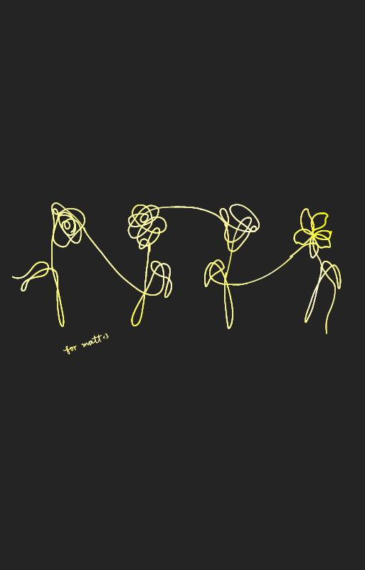

hehe chat mo na q<3
hello lovie ko! first of all, sorry, i know you're upset with me kasi i won't be able to be with you sa birthday mo:< and trust me i'd love to spend the day with you if it weren't for the district fair. i'm sorry love ko i don't know what to say kasi it's your special tapos i won't be able to see you:( i'm really sorry love. sorry din about sa argument natin earlier, i was also quite emotional kasi you are as important as my studies pero i made you question that. i love you baby and i don't want to lose you, to lose us, kaya please po let me bawi sa'yo okay? don't reject it love. as much as i want to regret lahat ng ginawa ko, i'd rather spend the time making an effort on how to make it up to you. you're right na everything will be messed up lang if i backed out eh so i have just one another way para makabawi sa'yo. i'd love to ask you out on september 23 in the morning, please go out with me?:)
